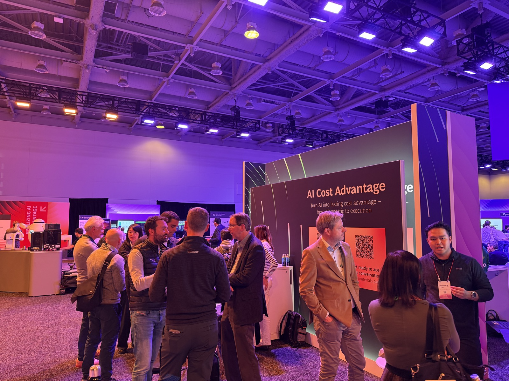
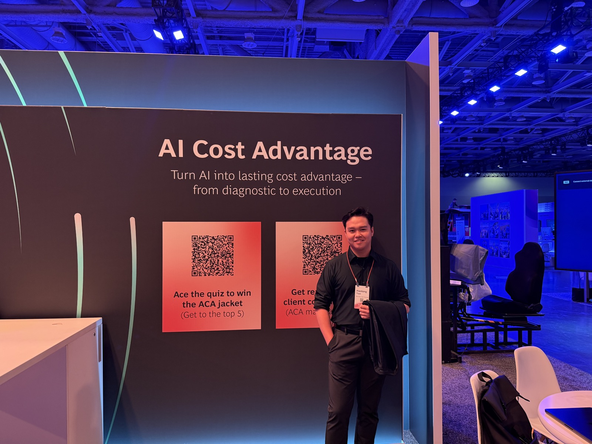
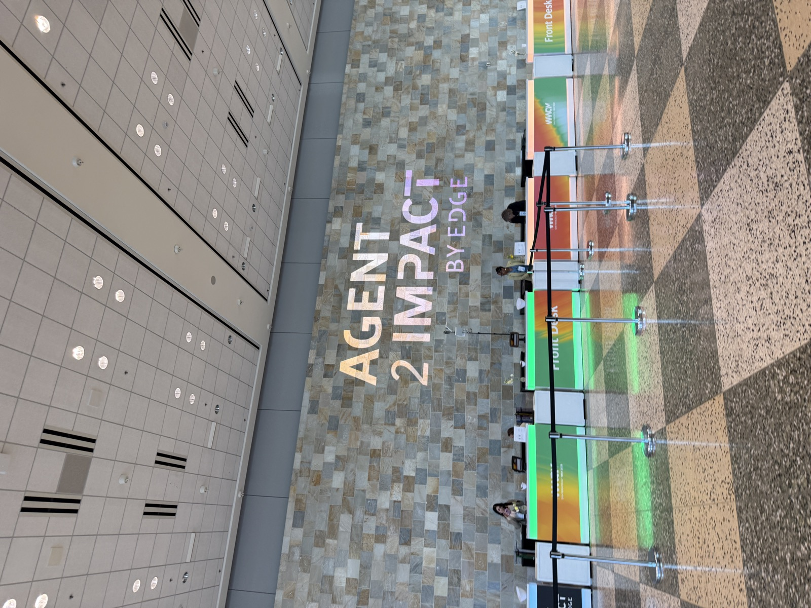
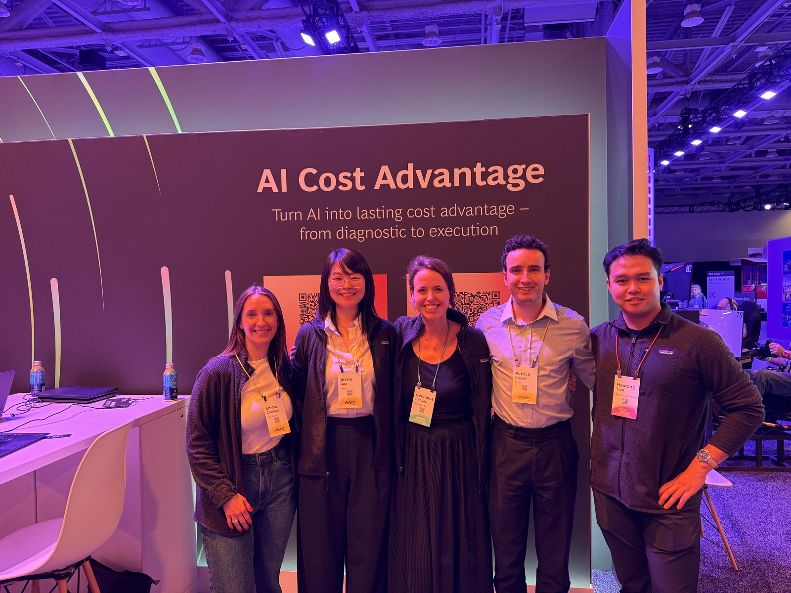
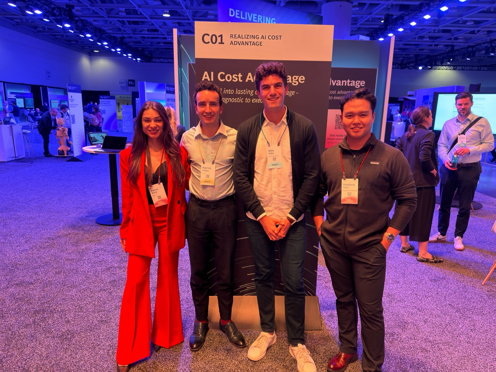

May 13, 2026
Demoed the Cost Diagnostic platform at BCG's EDGE Expo.
San Francisco, CA
Showcased one of our forward deployment builds for cost transformation — an AI-enabled workflow designed to help teams move from diagnostic insight to client-ready execution.




